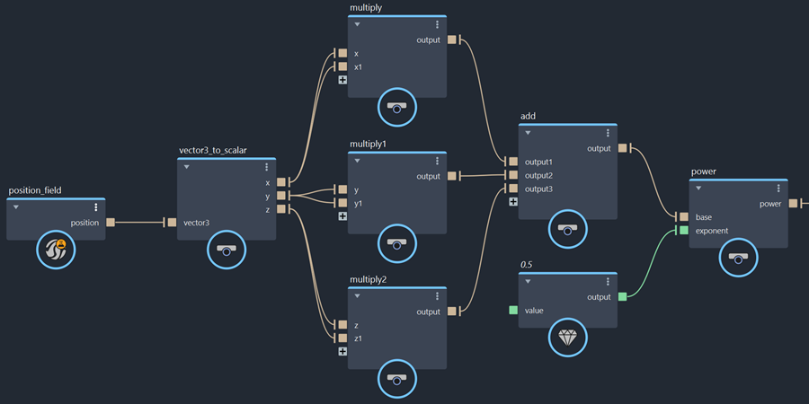

有多个节点可创建基本场，然后可以将其与其他场组合以实现复杂的效果。
虽然对场进行采样始终涉及在位置对其解算，但有时还需要显式使用该位置来定义场的公式。为此，可以使用 position_field 节点获取位置值，然后使用 vector3_to_scalar 获取成分 X、Y 和 Z 值（如有必要）。
例如，公式 √(x² + y² + z²) 可以得出从任何位置到原点的距离。

当公式中需要简单值（例如 2.5x²）时，常量场很有用。
to_field 节点是一个方便的复合，具有多个过载，允许您根据需要将许多不同的类型转化为标量场或向量场。scalar_field 节点可专门用于将单个 float 值转化为标量场。vector_field 节点可专门用于将单个 float3 值转化为向量场。plane_field 和 sphere_field 节点可用于创建表示平面和球体的有符号距离场。
此外，superquadric_shape_field 节点创建的形状范围从具有凹侧边的尖角八面体，到具有凸侧边的凸出八面体和球体，再到具有圆角的长方体，具体取决于其输入值。但是，请注意，结果不是有符号距离场，而只是一个等值面，其中场值 0 表示曲面。
有多个噪波场可供选择：
simplex_noise_field 创建一个基本的标量噪波场，其值介于 –1 和 1 之间。使用 time 输入可获取随时间逐渐变化的噪波场。fractal_noise_field 创建一个由单一噪波的多个频率组成的更复杂的标量噪波场。curl_noise_field 创建一个无散度的向量噪波场。无散度噪波对不可压缩的流体很有用，因为没有汇流消失的汇点，也没有汇流的来源。fractal_turbulence_field 创建一个由卷曲噪波的多个频率组成的复杂向量噪波场。